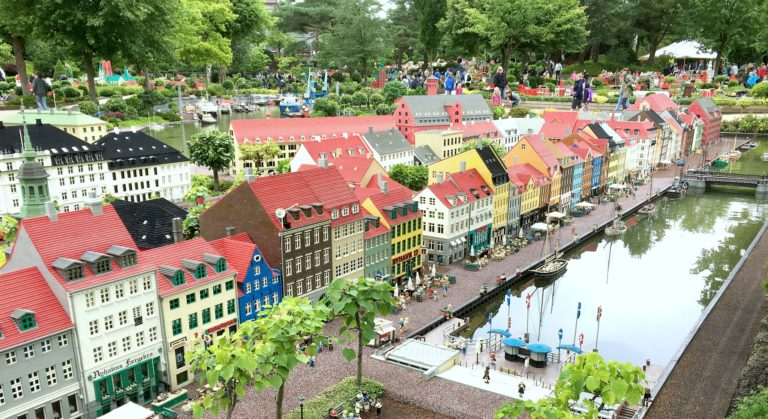

Tanskassa puhutaan tanskaa
Väkiluku on 5 827 463 ja väestöntiheys 129,5 as. / km²
Tanskan pinta-ala on 43 094 km²
Valuuttana toimii Tanskan kruunu
Tanskan bruttokansantuote vuonna 2014 oli 250 700 milj. USD

Luonto ja nähtävyydet
Koko Tanska on alamaata ja pääosin kulttuurimaisemaa. Tanskassa on leuto merellinen ilmasto. Vapaa-ajan aktiviteetteja ovat muun muassa metsästys, luonnossa kävely ja vaellus, ratsastus sekä kalastus metsien joissa ja järvissä. Tanskassa on pääasiallisesti vain kettuja, peuroja ja joitakin pienempiä eläimiä.
Tanska on voileipien ja Legolandin luvattu maa. Kun kulinaristit matkustavat Kööpenhaminaan herkuttelemaan ja nauttimaan pienen suurkaupungin ihastuttavasti ilmapiiristä, miettivät perheet sitä, mikä on paras tapa matkustaa lasten kanssa Legolandiin.
Toki Tanskan-lomalla on muutakin koettavaa, kuten Roskilden viikinkilaivamuseo, Egeskovin upea linna ja satusetä Andersenin viehättävä kotikaupunki Odense. Jyllannissa matkailijaa odottavat Tanskan komeat dyynit ja hiekkarannat. Upeita luontoseikkailuja Tanskassa voi kokea sekä Färsaarilla että Grönlannissa.
Matkakohteena Tanska onkin aikamoinen pikkujättiläinen, jossa on enemmän nähtävää ja koettavaa kuin alkuun uskoisikaan.
Parasta Tanskan-matkalla on yllättävänkin hienojen nähtävyyksien lisäksi paikallinen tunnelma.
Tietoa Tanskan nähtävyyksistä
